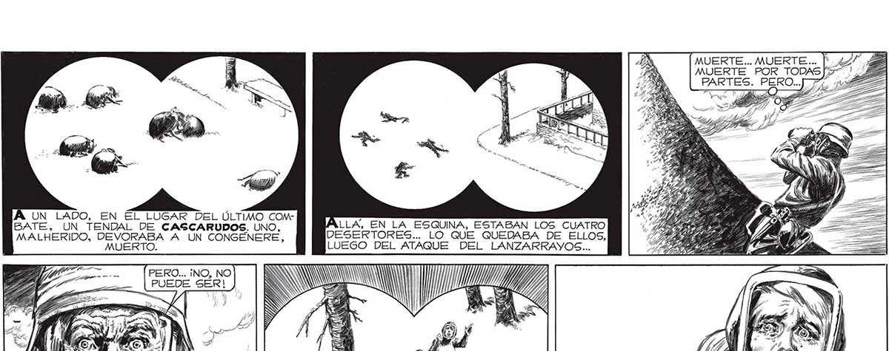
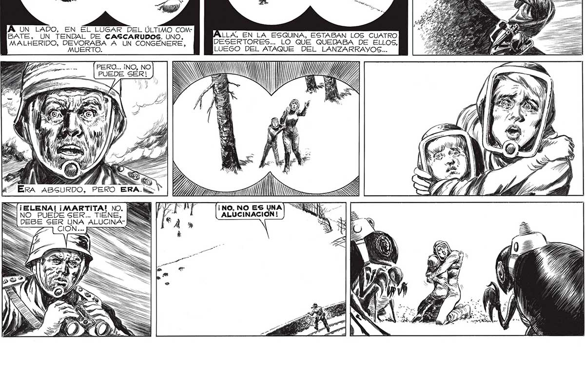

MIERTE... MUERTE... MUERTE POR TODAS PARTES. PERO..[ 7 NERY > 5 > PA A) AS E [BLA rr, rr a z 126 A, UN apa EN AS DEL ÚLTIMO COM- . BATE, UN TENDAL DE CASCARUDOS. UNO, E DESERTORES... LO QUE QUEDABA DE ELLOS, LUEGO DEL ATAQUE DEL LANZARRAYOS.. Y MALHERIDO, DEVORABA A UN CONGENERE, TA == INO, NO N Va A A Y PUEDE SER! J ol HA Me 8 Fo AT 17. ¡ ¡ELENA! ¡MARTITA! NO, NO PUEDE SER... TIENE, Y RS

